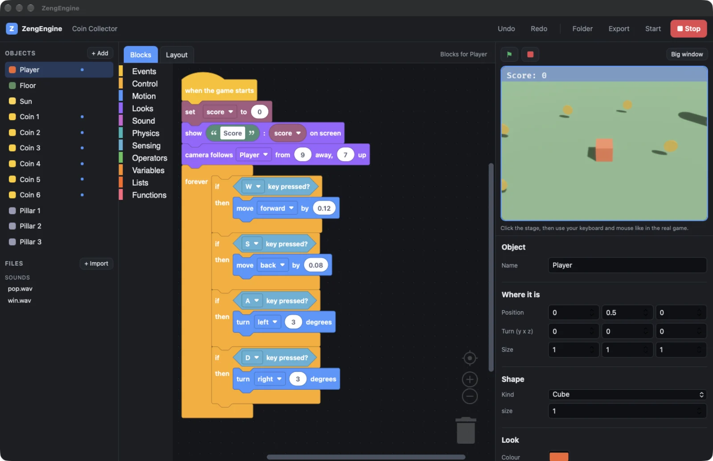
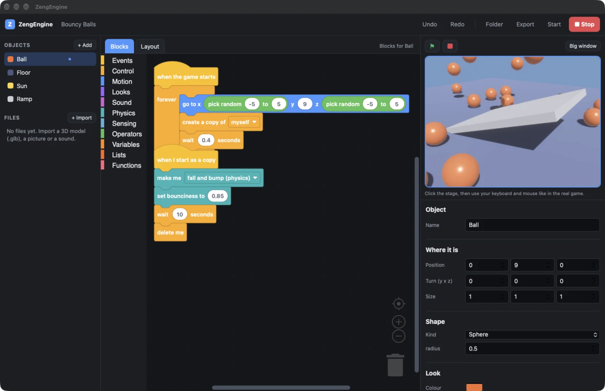

Make a 3D game by snapping blocks.
ZengEngine is a free game maker for your own computer. You build with blocks like Scratch, but the game is real 3D with lights, shadows, physics and sound. Press the green flag and it plays in the corner of the editor.

Blocks you already know how to read
Drag blocks together, like Scratch. There is no typing and no syntax to get wrong. Every object in your world has its own script.
Events and control
When the game starts, when a key is pressed, when I touch something, when I am clicked, every few seconds. Wait, repeat, forever, if, send a message, make a copy.
3D motion and looks
Move, turn, glide, look at another object. Change colour, show a score, make the camera follow the player, set the sky.
Physics and sound
Let things fall and bounce, make solid walls, push and set speed, set gravity. Play your own sounds. Variables, lists and your own functions are there when you want more.
When a block is wrong, the problem shows up in plain words under the editor. Click it and the editor jumps to that block.
The stage, top right
Press the green flag and your game runs right there, like the Scratch stage. Click it and your keyboard and mouse go to the game. Change a block, a colour or a position and the running game updates without a restart.
Want it bigger? One button opens the same game in its own large window.

Real 3D underneath
The game is drawn by Bevy, an open-source Rust game engine, on Metal, Vulkan or DirectX.
- Lit and shadowedMetal and rough materials, a sun, lamps and spotlights, shadows, glow and fog.
- Your own modelsImport 3D models (.glb), pictures and sounds with one button.
- PhysicsFalling, bouncing and solid objects, from the Avian physics engine.
- Pick your qualityFast for older computers, Nice, or Best with ambient shadows.
- Plain filesA game is a folder of text files, so it works with git.
- ExportOne button turns your game into an app you can share. Everything it needs is inside.
Three starter games
Each one opens with working blocks you can change.
Coin Collector
Walk around with W A S D and grab every coin. Teaches keys, score, touching and a following camera.
Bouncy Balls
Balls rain down and bounce off a ramp. Teaches timers, copies and physics.
Blank World
A floor, a light and one cube. Start from nothing.
What it is not, yet
This is version 0.1. It makes small and medium 3D games well. Be clear about the edges.
- It is not a AAA game pipeline. Blocks are interpreted and the engine is young. Think collecting games, physics toys and arcade games, not open-world blockbusters.
- No 3D view inside the editor. You arrange objects on a flat map from above or the side, and the stage shows the real 3D.
- Untested on some systems. The Windows and Linux builds compile in the cloud, but have not been run on a real machine yet. Only the Mac build has been used by hand.
- Missing today: animation graphs, terrain, networking, VR and phones. Export makes a game for the same kind of computer you are on.
- It sends nothing anywhere. No accounts, no servers, no telemetry. Games you make belong to you, with no fees and no royalties.
Get ZengEngine
No installer and no account. Unzip it and open ZengEngine. Version 0.1.0.
| macOS | Apple silicon (M1 or newer). Not notarized yet: the first time, right-click the app and choose Open. Used by hand and working. | Download |
|---|---|---|
| Windows | 64-bit, Windows 10 or 11 with the Edge WebView2 runtime. Built but not yet run on a real PC, so expect rough edges. | Download |
| Linux | 64-bit PC (x86_64). Needs WebKitGTK 4.1 and GTK 3. Built but not yet run on a real machine. | Download |
| Linux ARM | For ARM chips such as a Raspberry Pi. The game player has run; the editor window has not been opened. | Download |
There is no Intel Mac build yet. All files are on the release page.
# or build it yourself with Rust
git clone https://github.com/SirCreativeZHLM/ZengEngine
cd ZengEngine
cargo run --release -p zeng-editor